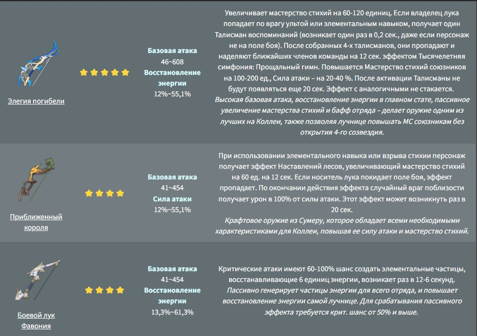
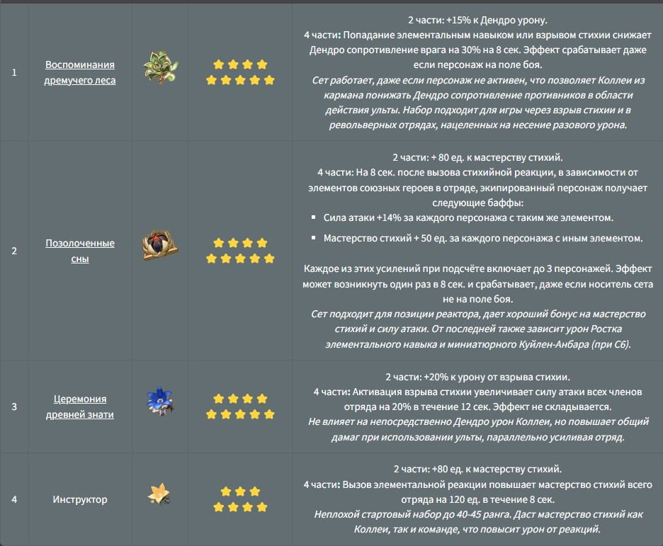

Коллеи – стажер Лесного дозора из Сумеру. За ее энергичной и жизнерадостной улыбкой скрывается довольно закрытая личность и тяжелая судьба. Но несмотря ни на что, девушка находит в себе силы смотреть на мир с оптимизмом и энтузиазмом. В игре Коллеи представлена в виде играбельного персонажа 4⭐ редкости со стрелковым оружием.
Оружие Коллеи подбираем с упором на увеличение дамага от скиллов и повышение мастерства стихий. При этом в роли поддержки также целесообразно в пассивных эффектах луков искать различные бонусы для команды.
Артефакты на Коллеи ставятся из учета ее роли и остального состава отряда. Хотя выбора среди полных сетов не так много, стоит выделить следующие комплекты: